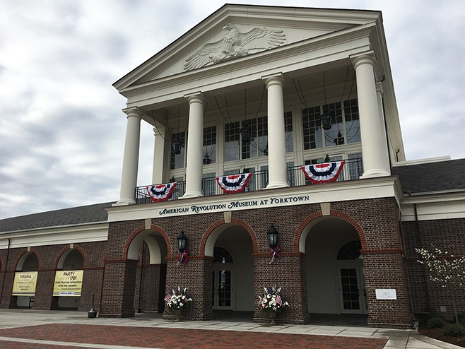
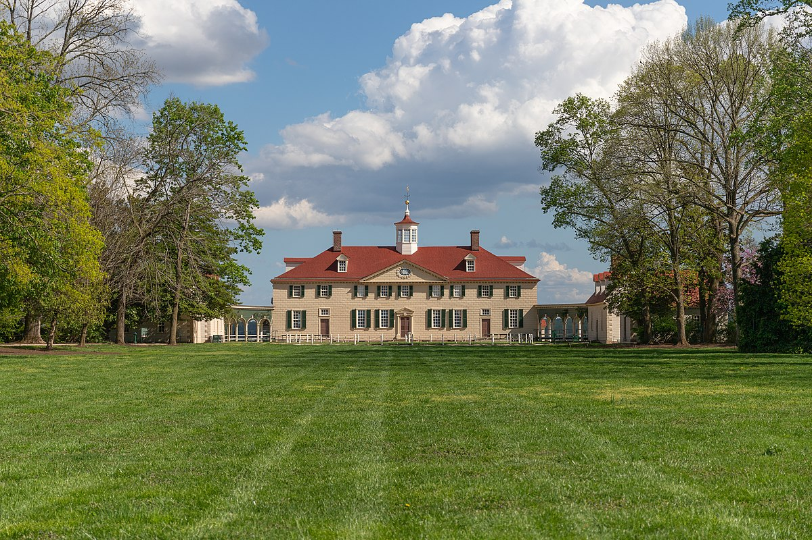

The first colony in the New World, found no where other than Jamestown, Virginia. Virginia has an extremely rich history, with historical sites ranging from past presidents estates, to the field where the British surrendered in Yorktown. Here are just a few of the great historical sites and landmarks Virginia has to offer:
1. Colonial Williamsburg
Colonial Williamsburg is home to historic buildings, museums and landscapes. Here you will also find period actors playing out lived experiences during the colonial era, making you feel immersed in the time capsule that is Colonial Williamsburg. For more information, click here.
2. Yorktown

Anyone who's studied the American Revolution knows the significance of Yorktown. Yorktown is home to the Yorktown Battlefield, where the last battle was fought in the American Revolution before British surrender. Yorktown is also part of Virginia's Historic Triangle, where you are only few miles from Williamsburg and Jamestown. While in town, make sure to visit the American Revolution Museum to see fascinating artifacts and exhibits from this crucial period in American history! For more information, click here.
3. Mount Vernon

Mount Vernon, home to the first president and vital Revolutionary War general George Washington. After inheriting the 500 acre estate from his family, George Washington spent decades creating his vision for his estate and lived there with his wife Martha until his passing in 1799. Both George and Martha were buried on Mount Vernon, and their graves can be visited when touring the beautiful estate. For more information, click here.
4. Monticello
Yet another famous estate from a past president: Thomas Jefferson's Monticello. Sitting right outside of Charlottesville, Monticello was Jefferson's most personal achievement. Jefferson began building his estate at 26 years old lived out his final years on the property. Here you will find beautiful landscapes which provide a backdrop for the iconic Monticello. For more information, click here.